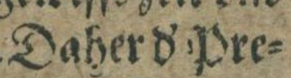
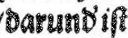

Abbreviaturen
Horizontale Kürzungsstriche
Horizontale Kürzungsstriche (Balken oder geschlängelte Linie über Buchstaben als Substituenten für ausgelassene Zeichen, Nasalstrich) werden mittels des Zeichens U+0303, COMBINING TILDE transkribiert.
| Vorlage | Transkription |
|---|---|
 |
from̃en |
 |
Uñ macht |
Vertikale Kürzungsstriche
Vertikale Kürzungsstriche werden in der Regel mit dem Unicode-Zeichen U+0315, COMBINING COMMA ABOVE RIGHT wiedergegeben
| Vorlage | Transkription |
|---|---|
|  | Daher d̕ Pre- |
|  | darund̕ iſt |
Tipp: Zur Expansion von Abkürzungen s. Kapitel Auflösung von Abkürzungen.